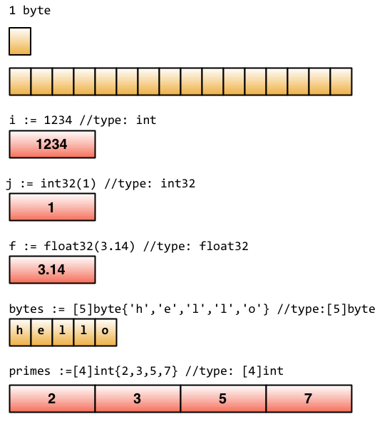
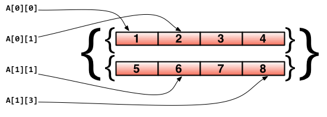
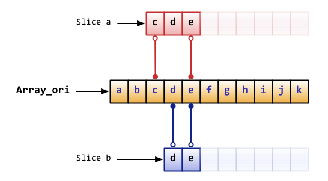
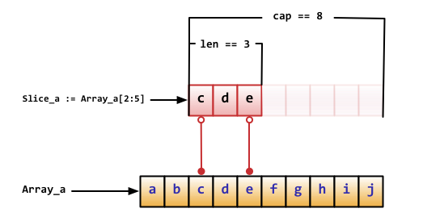

Go Learning
Table of Contents
- 1. 测试
- 2. 环境配置
- 3. go 命令
- 4. go 基础
- 5. 流程和函数
- 6. struct类型
- 7. 面向对象
- 8. interface
- 9. 并发
- 10. 排序和查找
- 11. 稀疏数组
- 12. 数组模拟队列
- 13. 链表
- 14. protocol buffers
- 15. grpc
- 16. 文件操作
- 17. json操作
- 18. regexp
- 19. go net
- 20. GoLang中 json、map、struct 之间的相互转化
- 21. go mod
- 22. goini
- 23. go time
- 24. go mongo
- 25. go log
- 26. go test
- 27. go sync
- 28. go init和main
- 29. go fieldmask-utils
- 30. go uuid
- 31. go elasticsearch
- 32. go fasthttp
- 33. go strconv
1 测试
1.1 字符串数组
package main import ( "fmt" ) func RemoveSliceNil(arg_slice []string) []string { flag := false var new_slice []string for index, value := range arg_slice { if value == "" { flag = true new_slice = append(arg_slice[:index],arg_slice[index+1:] ...) } } if flag == true { return new_slice } else { return arg_slice } } func main() { ipRegexp := [...]string{"network.udp[*].dst", "network.hosts[*]", "network.dns[*].answers[?(@.type=='A')].data", "network.domains[*].ip", "network.http_ex[*].dst", "network.tcp[*].dst", "behavior.generic[*].summary.connects_ip[*]", } for _, s := range ipRegexp { fmt.Println(s) } s := []string{"1", "2"} res := RemoveSliceNil(s) fmt.Println("删除空字符后结果：%+v",res) }
1.2 if 测试
package main import ("fmt") func main() { name := "" if name != "" { fmt.Println(name) } }
1.3 go map
package main import("fmt") func main() { fgSrc := make(map[string]string) fgSrc["name"] = "xxxxx" fmt.Print(fgSrc) }
1.4 string
package main import ( "fmt" "strings" ) func main() { // reg := []string{"a", "b", "c"} // fmt.Println(strings.Join(reg, ",")) fmt.Println(strings.Contains("www.baidu.com", ".")) }
1.5 slice test
https://blog.csdn.net/youngwhz1/article/details/83026263
package main import ( "fmt" ) func SliceRemove(s []interface{}, index int) []interface{} { return append(s[:index], s[index+1:]...) } func SliceRemove2(s *[]interface{}, index int) { *s = append((*s)[:index], (*s)[index+1:]...) } func main() { var ss []string print("func print", ss) //切片尾部追加元素append elemnt for i := 0; i < 10; i++ { ss = append(ss, fmt.Sprintf("s%d", i)) } fmt.Println("切片原始数据: %+v", ss) // res := append(ss[:2],ss[3:] ...) // fmt.Println("删除第二个原素: %+v", res) index := len(ss) - 1 last_res := append(ss[:index], ss[index+1:]...) fmt.Println("删除最后一个原素: %+v", last_res) }
1.6 page size
package main import ( "fmt" ) // Page ... func Page(s []string, pageSize, pageNum int32, target string) []string { new_s := []string{} new_s = append(new_s, target) start := (pageNum - 1) * pageSize end := start + pageSize // 提取taget到第一个元素 for index, value := range s { if value == target { new_s = append(new_s, s[:index]...) new_s = append(new_s, s[index+1:]...) break } } return new_s[start:end] } func main() { var ss []string //切片尾部追加元素append elemnt for i := 0; i < 10; i++ { ss = append(ss, fmt.Sprintf("s%d", i)) } fmt.Println("切片原始数据: %+v", ss) s := Page(ss, 3, 2, "s4") fmt.Println("分页数据为 : %+v", s) }
2 环境配置
mac install
https://golang.org/doc/install?download=go1.11.5.darwin-amd64.pkgThe package should put the /usr/local/go/bin directory in your PATH environment variable.
You may need to restart any open Terminal sessions for the change to take effect.
GOPATH
$GOPATH/go与工作空间编译应用: 在任意的目录执行如下代码go install mymath
3 go 命令
https://github.com/astaxie/build-web-application-with-golang/blob/master/zh/01.3.md
go build
编译代码
go clean
利用这个命令清除编译文件，然后github递交源码
go clean -i -ngo fmt
格式化代码
go get
动态获取远程包
go install
这个命令在内部实际上分成了两步操作：第一步是生成结果文件(可执行文件或者.a包)，第二步会把编译好的结果移到$GOPATH/pkg或者$GOPATH/bin
go test
会自动读取源码目录下面名为*test.go的文件，生成并运行测试用的可执行文件
go generate
通过分析源码中特殊的注释，然后执行相应的命令
godoc
看文档
go run
编译并运行Go程序
4 go 基础
package <pkgName>（在我们的例子中是package main）这一行告诉我们当前文件属于哪个包
包名main则告诉我们它是一个可独立运行的包，它在编译后会产生可执行文件。除了main包之外，其它的包最后都会生成*.a文件
每一个可独立运行的Go程序，必定包含一个package main，在这个main包中必定包含一个入口函数main，而这个函数既没有参数，也没有返回值
定义变量
var vname1, vname2, vname3 type= v1, v2, v3定义三个变量初始化/* 定义三个变量，它们分别初始化为相应的值 vname1为v1，vname2为v2，vname3为v3 编译器会根据初始化的值自动推导出相应的类型 */ vname1, vname2, vname3 := v1, v2, v3这种简洁形式叫做简短声明。不过它有一个限制，那就是它只能用在函数内部；在函数外部使用则会无法编译通过，所以一般用var方式来定义全局变量
下划线是个特殊的变量名，任何赋予它的值都会被丢弃
_, b := 34, 3534就丢弃了常量
常量可定义为数值、布尔值或字符串等类型
// 指定类型 const Pi float32 = 3.1415926 const i = 10000fmt.Println("当前时间：", time.Now())内置基础类型
- Boolean
- 数值类型
- 字符串
- 错误类型
基础类型底层都是分配了一块内存，然后存储了相应的值

- 一些技巧
分组声明
同时声明多个常量、变量，或者导入多个包时，可采用分组的方式进行声明
iota枚举
这个关键字用来声明enum的时候采用，它默认开始值是0，const中每增加一行加1
const ( a = iota //a=0 b = "B" c = iota //c=2 d, e, f = iota, iota, iota //d=3,e=3,f=3 g = iota //g = 4 )- 大小写命名
- 大写字母开头的变量是可导出的，也就是其它包可以读取的，是公有变量；小写字母开头的就是不可导出的，是私有变量。
- 大写字母开头的函数也是一样，相当于class中的带public关键词的公有函数；小写字母开头的就是有private关键词的私有函数。
- array、slice、map
array
定义数组
var arr [n]type由于长度也是数组类型的一部分，因此[3]int与[4]int是不同的类型，数组也就不能改变长度
数组之间的赋值是值的赋值，即当把一个数组作为参数传入函数的时候，传入的其实是该数组的副本，而不是它的指针
c := [...]int{4, 5, 6} // 可以省略长度而采用`...`的方式，Go会自动根据元素个数来计算长度二维数组声明
// 声明了一个二维数组，该数组以两个数组作为元素，其中每个数组中又有4个int类型的元素 doubleArray := [2][4]int{[4]int{1, 2, 3, 4}, [4]int{5, 6, 7, 8}} // 上面的声明可以简化，直接忽略内部的类型 easyArray := [2][4]int{{1, 2, 3, 4}, {5, 6, 7, 8}}多维数组的映射关系

slice
动态数组
slice并不是真正意义上的动态数组，而是一个引用类型。
slice总是指向一个底层array，slice的声明也可以像array一样，只是不需要长度
//声明一个slice，并初始化数据 slice := []byte {'a', 'b', 'c', 'd'}slice可以从一个数组或一个已经存在的slice中再次声明

slice是一个 引用,所以当引用改变其中元素的值时，其它的所有引用都会改变该值，
ar[:]等价于 ar[0:len(ar)] 同python从概念上面来说slice像一个结构体，这个结构体包含了三个元素:
- 一个指针，指向数组中slice指定的开始位置
- 长度，即slice的长度
- 最大长度，也就是slice开始位置到数组的最后位置的长度

slice函数:
len 获取slice的长度
cap 获取slice的最大容量
append 向slice里面追加一个或者多个元素，然后返回一个和slice一样类型的slice
copy 函数copy从源slice的src中复制元素到目标dst，并且返回复制的元素的个数
map
map也就是Python中字典的概念，它的格式为map[keyType]valueType
map key 多了很多类型，可以是int，可以是string及所有完全定义了==与!=操作的类型
使用map过程中需要注意的几点：
- map是无序的，每次打印出来的map都会不一样，它不能通过index获取，而必须通过key获取
- map的长度是不固定的，也就是和slice一样，也是一种 引用类型
- 内置的len函数同样适用于map，返回map拥有的key的数量
- map和其他基本型别不同，它不是thread-safe，在多个go-routine存取时，必须使用mutex lock机制
零值
关于“零值”，所指并非是空值，而是一种“变量未填充前”的默认值，通常为0
- make、new操作
make用于内建类型（map、slice 和channel）的内存分配
slice、map和channel来说，make初始化了内部的数据结构，填充适当的值
make返回初始化后的（非零）值
new用于各种类型的内存分配
new(T)分配了零值填充的T类型的内存空间，并且返回其地址
new返回指针
5 流程和函数
Go中流程控制分三大类：条件判断，循环控制和无条件跳转
if
// 计算获取值x,然后根据x返回的大小，判断是否大于10。 if x := computedValue(); x > 10 { fmt.Println("x is greater than 10") } else { fmt.Println("x is less than 10") } //这个地方如果这样调用就编译出错了，因为x是条件里面的变量 fmt.Println(x)goto
用goto跳转到必须在当前函数内定义的标签
func myFunc() { i := 0 Here: //这行的第一个词，以冒号结束作为标签 println(i) i++ goto Here //跳转到Here去 }for
package main import "fmt" func main() { sum := 0 for index := 0; index < 10; index++ { sum += index } fmt.Println("sum is equal to ", sum) }有些时候如果我们忽略expression1和expression3,就是while功能(省略了前;和后;)
sum := 1 for sum < 1000 { sum += sum }for配合range可以用于读取slice和map的数据：
//丢弃声明而未调用的key for _, v := range map{ fmt.Println("map's val:", v) }switch
integer := 6 switch integer { case 4: fmt.Println("The integer was <= 4") fallthrough case 5: fmt.Println("The integer was <= 5") fallthrough case 6: fmt.Println("The integer was <= 6") fallthrough default: fmt.Println("default case") }函数
func funcName(input1 type1, input2 type2) (output1 type1, output2 type2) { //这里是处理逻辑代码 //返回多个值 return value1, value2 }
变参
func myfunc(arg ...int) {}arg …int告诉Go这个函数接受不定数量的参数,注意，这些参数的类型全部是int
传值与传指针
package main import "fmt" //简单的一个函数，实现了参数+1的操作 func add1(a *int) int { // 请注意， *a = *a + 1 // 修改了a的值 return *a // 返回新值 } func main() { x := 3 fmt.Println("x = ", x) // 应该输出 "x = 3" x1 := add1(&x) // 调用 add1(&x) 传x的地址 fmt.Println("x+1 = ", x1) // 应该输出 "x+1 = 4" fmt.Println("x = ", x) // 应该输出 "x = 4" }传递指针的好处
- 传指针使得多个函数能操作同一个对象。
- 传指针比较轻量级 (8bytes),只是传内存地址，我们可以用指针传递体积大的结构体。 如果用参数值传递的话, 在每次copy上面就会花费相对较多的系统开销（内存和时间）
- Go语言中channel，slice，map这三种类型的实现机制类似指针，所以可以直接传递，而不用取地址后传递指针。 （注：若函数需改变slice的长度，则仍需要取地址传递指针）
defer
延迟（defer）
在defer后指定的函数会在函数退出前调用
func ReadWrite() bool { file.Open("file") defer file.Close() if failureX { return false } if failureY { return false } return true }如果有很多调用defer，那么defer是采用 后进先出 模式，所以如下代码会输出4 3 2 1 0
for i := 0; i < 5; i++ { defer fmt.Printf("%d ", i) }函数作为值、类型
package main import "fmt" type testInt func(int) bool // 声明了一个函数类型 func isOdd(integer int) bool { if integer%2 == 0 { return false } return true } func isEven(integer int) bool { if integer%2 == 0 { return true } return false } // 声明的函数类型在这个地方当做了一个参数 func filter(slice []int, f testInt) []int { var result []int for _, value := range slice { if f(value) { result = append(result, value) } } return result } func main() { slice := []int{1, 2, 3, 4, 5, 7} fmt.Println("slice = ", slice) odd := filter(slice, isOdd) // 函数当做值来传递了 fmt.Println("Odd elements of slice are: ", odd) even := filter(slice, isEven) // 函数当做值来传递了 fmt.Println("Even elements of slice are: ", even) }testInt这个类型是一个函数类型，然后两个filter函数的参数和返回值与testInt类型是一样的
Panic和Recover
Go没有像Java那样的异常机制，它不能抛出异常，而是使用了panic和recover机制
Panic :是一个内建函数，可以中断原有的控制流程，进入一个panic状态中。 当函数F调用panic，函数F的执行被中断，但是F中的延迟函数会正常执行，然后F返回到调用它的地方。 在调用的地方，F的行为就像调用了panic。这一过程继续向上，直到发生panic的goroutine中所有调用的函数返回，此时程序退出。 panic可以直接调用panic产生。也可以由运行时错误产生，例如访问越界的数组。
var user = os.Getenv("USER") func init() { if user == "" { panic("no value for $USER") } }Recover:是一个内建的函数，可以让进入panic状态的goroutine恢复过来。 recover仅在延迟函数中有效。在正常的执行过程中，调用recover会返回nil，并且没有其它任何效果。 如果当前的goroutine陷入panic状态，调用recover可以捕获到panic的输入值，并且恢复正常的执行。
func throwsPanic(f func()) (b bool) { defer func() { if x := recover(); x != nil { b = true } }() f() //执行函数f，如果f中出现了panic，那么就可以恢复回来 return }main函数和init函数
Go里面有两个保留的函数：init函数（能够应用于所有的package）和main函数（只能应用于package main）
两个函数在定义时不能有任何的参数和返回值
强烈建议用户在一个package中每个文件只写一个init函数
main函数引入包初始化流程图:

- import
- 两种方式来加载自己写的模块
相对路径
import “./model”当前文件同一目录的model目录，但是不建议这种方式来import绝对路径
import “shorturl/model”//加载gopath/src/shorturl/model模块- import常用的几种方式
点操作
import( . "fmt" )调用这个包的函数时，你可以省略前缀的包名，也就是前面你调用的fmt.Println("hello world")可以省略的写成Println("hello world")
别名操作
别名操作顾名思义我们可以把包命名成另一个我们用起来容易记忆的名字
import( f "fmt" )
f.Println("hello world")_操作
这个操作经常是让很多人费解的一个操作符，请看下面这个import
import ( "database/sql" _ "github.com/ziutek/mymysql/godrv" )_操作其实是引入该包，而不直接使用包里面的函数，而是调用了该包里面的init函数。
6 struct类型
自定义类型person代表一个人的实体。这个实体拥有属性：姓名和年龄。这样的类型我们称之struct
type person struct { name string age int } var P person // P现在就是person类型的变量了 P.name = "Astaxie" // 赋值"Astaxie"给P的name属性. P.age = 25 // 赋值"25"给变量P的age属性 fmt.Printf("The person's name is %s", P.name) // 访问P的name属性.除了上面这种P的声明使用之外，还有另外几种声明使用方式：
按照顺序提供初始化值
P := person{"Tom", 25}
通过field:value的方式初始化，这样可以任意顺序
P := person{age:24, name:"Tom"}
当然也可以通过new函数分配一个指针，此处P的类型为*person
P := new(person)
struct的匿名字段
不写字段名的方式，也就是匿名字段，也称为嵌入字段
package main import "fmt" type Human struct { name string age int weight int } type Student struct { Human // 匿名字段，那么默认Student就包含了Human的所有字段 speciality string }
7 面向对象
method
用Rob Pike的话来说就是： "A method is a function with an implicit first argument, called a receiver."
method的概念，method是附属在一个给定的类型上的
method的语法如下：
func (r ReceiverType) funcName(parameters) (results)package main import ( "fmt" "math" ) type Rectangle struct { width, height float64 } type Circle struct { radius float64 } func (r Rectangle) area() float64 { return r.width * r.height } func (c Circle) area() float64 { return c.radius * c.radius * math.Pi } func main() { r1 := Rectangle{12, 2} r2 := Rectangle{9, 4} c1 := Circle{10} c2 := Circle{25} fmt.Println("Area of r1 is: ", r1.area()) fmt.Println("Area of r2 is: ", r2.area()) fmt.Println("Area of c1 is: ", c1.area()) fmt.Println("Area of c2 is: ", c2.area()) }method里面可以访问接收者的字段
调用method通过.访问，就像struct里面访问字段一样
指针作为receiver
为啥要使用指针而不是Box本身呢？ : 改变传入对象本身，而不是对象的copy
如果一个method的receiver是*T,你可以在一个T类型的实例变量V上面调用这个method，而不需要&V去调用这个method
如果一个method的receiver是T，你可以在一个*T类型的变量P上面调用这个method，而不需要 *P去调用这个method
你不用担心你是调用的指针的method还是不是指针的method，Go知道你要做的一切
method继承
package main import "fmt" type Human struct { name string age int phone string } type Student struct { Human //匿名字段 school string } type Employee struct { Human //匿名字段 company string } //在human上面定义了一个method func (h *Human) SayHi() { fmt.Printf("Hi, I am %s you can call me on %s\n", h.name, h.phone) } func main() { mark := Student{Human{"Mark", 25, "222-222-YYYY"}, "MIT"} sam := Employee{Human{"Sam", 45, "111-888-XXXX"}, "Golang Inc"} mark.SayHi() sam.SayHi() }method重写
package main import "fmt" type Human struct { name string age int phone string } type Student struct { Human //匿名字段 school string } type Employee struct { Human //匿名字段 company string } //Human定义method func (h *Human) SayHi() { fmt.Printf("Hi, I am %s you can call me on %s\n", h.name, h.phone) } //Employee的method重写Human的method func (e *Employee) SayHi() { fmt.Printf("Hi, I am %s, I work at %s. Call me on %s\n", e.name, e.company, e.phone) //Yes you can split into 2 lines here. } func main() { mark := Student{Human{"Mark", 25, "222-222-YYYY"}, "MIT"} sam := Employee{Human{"Sam", 45, "111-888-XXXX"}, "Golang Inc"} mark.SayHi() sam.SayHi() }
8 interface
什么是interface
interface类型定义了一组方法，如果某个对象实现了某个接口的所有方法，则此对象就实现了此接口
interface是一组method签名的组合，我们通过interface来定义对象的一组行为。
比如: Student实现了三个方法：SayHi、Sing、BorrowMoney；而Employee实现了SayHi、Sing、SpendSalary
上面这些方法的组合称为interface(被对象Student和Employee实现)。
例如Student和Employee都实现了interface：SayHi和Sing，也就是这两个对象是该interface类型
Employee没有实现这个interface：SayHi、Sing和BorrowMoney，因为Employee没有实现BorrowMoney这个方法
interface值
package main import "fmt" type Human struct { name string age int phone string } type Student struct { Human //匿名字段 school string loan float32 } type Employee struct { Human //匿名字段 company string money float32 } //Human实现SayHi方法 func (h Human) SayHi() { fmt.Printf("Hi, I am %s you can call me on %s\n", h.name, h.phone) } //Human实现Sing方法 func (h Human) Sing(lyrics string) { fmt.Println("La la la la...", lyrics) } //Employee重载Human的SayHi方法 func (e Employee) SayHi() { fmt.Printf("Hi, I am %s, I work at %s. Call me on %s\n", e.name, e.company, e.phone) } // Interface Men被Human,Student和Employee实现 // 因为这三个类型都实现了这两个方法 type Men interface { SayHi() Sing(lyrics string) } func main() { mike := Student{Human{"Mike", 25, "222-222-XXX"}, "MIT", 0.00} paul := Student{Human{"Paul", 26, "111-222-XXX"}, "Harvard", 100} sam := Employee{Human{"Sam", 36, "444-222-XXX"}, "Golang Inc.", 1000} tom := Employee{Human{"Tom", 37, "222-444-XXX"}, "Things Ltd.", 5000} //定义Men类型的变量i var i Men //i能存储Student i = mike fmt.Println("This is Mike, a Student:") i.SayHi() i.Sing("November rain") //i也能存储Employee i = tom fmt.Println("This is tom, an Employee:") i.SayHi() i.Sing("Born to be wild") //定义了slice Men fmt.Println("Let's use a slice of Men and see what happens") x := make([]Men, 3) //这三个都是不同类型的元素，但是他们实现了interface同一个接口 x[0], x[1], x[2] = paul, sam, mike for _, value := range x{ value.SayHi() } }interface就是一组抽象方法的集合，它必须由其他非interface类型实现，而不能自我实现
空interface
任意的类型都实现了空interface(我们这样定义：interface{})，也就是包含0个method的interface
空interface在我们需要存储任意类型的数值的时候相当有用，因为它可以存储任意类型的数值
一个函数把interface{}作为参数，那么他可以接受任意类型的值作为参数，如果一个函数返回interface{},那么也就可以返回任意类型的值
// 定义a为空接口 var a interface{} var i int = 5 s := "Hello world" // a可以存储任意类型的数值 a = i a = sinterface函数参数
interface的变量可以持有任意实现该interface类型的对象，这给我们编写函数(包括method)提供了一些额外的思考，
我们是不是可以通过定义interface参数，让函数接受各种类型的参数。
举个例子：fmt.Println是我们常用的一个函数，但是你是否注意到它可以接受任意类型的数据。打开fmt的源码文件，你会看到这样一个定义:
type Stringer interface { String() string }任何实现了String方法的类型都能作为参数被fmt.Println调用,让我们来试一试 java里的toString
package main import ( "fmt" "strconv" ) type Human struct { name string age int phone string } // 通过这个方法 Human 实现了 fmt.Stringer func (h Human) String() string { return "❰"+h.name+" - "+strconv.Itoa(h.age)+" years - ✆ " +h.phone+"❱" } func main() { Bob := Human{"Bob", 39, "000-7777-XXX"} fmt.Println("This Human is : ", Bob) }interface变量存储的类型
我们知道interface的变量里面可以存储任意类型的数值(该类型实现了interface)。 那么我们怎么反向知道这个变量里面实际保存了的是哪个类型的对象呢？目前常用的有两种方法：
Comma-ok断言
value, ok = element.(T)
如果element里面确实存储了T类型的数值，那么ok返回true，否则返回false
package main import ( "fmt" "strconv" ) type Element interface{} type List []Element type Person struct { name string age int } //定义了String方法，实现了fmt.Stringer func (p Person) String() string { return "(name: " + p.name + " - age: " + strconv.Itoa(p.age) + " years)" } func main() { list := make(List, 3) list[0] = 1 // an int list[1] = "Hello" // a string list[2] = Person{"Dennis", 70} for index, element := range list { if value, ok := element.(int); ok { fmt.Printf("list[%d] is an int and its value is %d\n", index, value) } else if value, ok := element.(string); ok { fmt.Printf("list[%d] is a string and its value is %s\n", index, value) } else if value, ok := element.(Person); ok { fmt.Printf("list[%d] is a Person and its value is %s\n", index, value) } else { fmt.Printf("list[%d] is of a different type\n", index) } } }switch测试
package main import ( "fmt" "strconv" ) type Element interface{} type List [] Element type Person struct { name string age int } //打印 func (p Person) String() string { return "(name: " + p.name + " - age: "+strconv.Itoa(p.age)+ " years)" } func main() { list := make(List, 3) list[0] = 1 //an int list[1] = "Hello" //a string list[2] = Person{"Dennis", 70} for index, element := range list{ switch value := element.(type) { case int: fmt.Printf("list[%d] is an int and its value is %d\n", index, value) case string: fmt.Printf("list[%d] is a string and its value is %s\n", index, value) case Person: fmt.Printf("list[%d] is a Person and its value is %s\n", index, value) default: fmt.Println("list[%d] is of a different type", index) } } }嵌入interface
像我们在学习Struct时学习的匿名字段,如果一个interface1作为interface2的一个嵌入字段，那么interface2隐式的包含了interface1里面的method
io包下面的 io.ReadWriter ，它包含了io包下面的Reader和Writer两个interface
// io.ReadWriter type ReadWriter interface { Reader Writer }反射
所谓反射就是能检查程序在运行时的状态
这为我们提供一种可以在运行时操作任意类型对象的能力。比如我们可以查看一个接口变量的具体类型，看看一个结构体有多少字段，如何修改某个字段的值等等
我们一般用到的包是reflect包。如何运用reflect包，官方的这篇文章详细的讲解了reflect包的实现原理
https://blog.golang.org/laws-of-reflection
typeOf和ValueOf:
在Go的反射定义中，任何接口都会由两部分组成的，一个是接口的具体类型，一个是具体类型对应的值
<Value,Type>比如
var i int = 3，因为interface{}可以表示任何类型，所以变量i可以转为interface{}，所以可以把变量i当成一个接口 ，其中Value为变量的值3,Type变量的为类型int
reflect.TypeOf(i)可以获取任意对象的具体类型
reflect.ValueOf(i)反射获取一个对象的Valuereflect.Value
用Inteface方法转原始类型
type User struct{ Name string Age int } u:= User{"张三",20} t:=reflect.TypeOf(u) v:=reflect.ValueOf(u) //reflect.Value为我们提供了Inteface方法 来实现reflect.Value转原始类型 u1:=v.Interface().(User)修改字段的值
x:=2 v:=reflect.ValueOf(&x) v.Elem().SetInt(100) fmt.Println(x)reflect.Type
获取User类型底层类型
reflect.Type.Kind
t.Kind()遍历字段和方法
reflect.Type.NumField reflect.Type.Field reflect.Type.NumMethod
for i:=0;i<t.NumField();i++ { fmt.Println(t.Field(i).Name) } for i:=0;i<t.NumMethod() ;i++ { fmt.Println(t.Method(i).Name) }反射在序列化中获取struct的tag内容
package main import ( "encoding/json" "fmt" "reflect" ) func main() { type User struct { UserId int `json:"user_id" bson:"user_id"` UserName string `json:"user_name" bson:"user_name"` } // 输出json格式 u := &User{UserId: 1, UserName: "tony"} j, _ := json.Marshal(u) fmt.Println(string(j)) // 获取tag中的内容 t := reflect.TypeOf(u) field := t.Elem().Field(0) fmt.Println(field.Tag.Get("json")) // 输出：user_id fmt.Println(field.Tag.Get("bson")) // 输出：user_id }为了在格式化成json格式时，可以选择合适的健值，在struct属性上增加tag，如果没有tag则显示：
{"UserId":1,"UserName":"tony"}
- 使用reflect一般分成两步
转化成reflect对象
t := reflect.TypeOf(i) //得到类型的元数据,通过t我们能获取类型定义里面的所有元素 v := reflect.ValueOf(i) //得到实际的值，通过v我们获取存储在里面的值，还可以去改变值转化为reflect对象之后我们就可以进行一些操作了
tag := t.Elem().Field(0).Tag //获取定义在struct里面的标签 name := v.Elem().Field(0).String() //获取存储在第一个字段里面的值 // 修改相应的值 var x float64 = 3.4 p := reflect.ValueOf(&x) v := p.Elem() v.SetFloat(7.1)- 反射三定律：
- 反射可以将“接口类型变量”转换为“反射类型对象”。
- 反射可以将“反射类型对象”转换为“接口类型变量”。
- 如果要修改“反射类型对象”，其值必须是“可写的”（settable）
9 并发
goroutine
goroutine是通过Go的runtime管理的一个线程管理器
goroutine说到底其实就是协程，但是它比线程更小，十几个goroutine可能体现在底层就是五六个线程
Go语言内部帮你实现了这些goroutine之间的内存共享。执行goroutine只需极少的栈内存(大概是4~5KB)
go关键字很方便的就实现了并发编程。
package main import ( "fmt" "runtime" ) func say(s string) { for i := 0; i < 3; i++ { runtime.Gosched() fmt.Println(s) } } func main() { go say("world") //开一个新的Goroutines执行 say("hello") //当前Goroutines执行 }上面的多个goroutine运行在同一个进程里面，共享内存数据，不过设计上我们要遵循：不要通过共享来通信，而要通过通信来共享
runtime.Gosched()表示让CPU把时间片让给别人,下次某个时候继续恢复执行该goroutine。 默认情况下，在Go 1.5将标识并发系统线程个数的runtime.GOMAXPROCS的初始值由1改为了运行环境的CPU核数
runtime.GOMAXPROCS(n)置了同时运行逻辑代码的系统线程的最大数量,如果n < 1，不会改变当前设置channels
goroutine运行在相同的地址空间，因此访问共享内存必须做好同步
Go提供了一个很好的通信机制channel
可以通过channel发送或者接收值。这些值只能是特定的类型：channel类型
定义一个channel时，也需要定义发送到channel的值的类型。注意，必须使用
make创建channelchannel通过操作符
<-来接收和发送数据ci := make(chan int) cs := make(chan string) cf := make(chan interface{}) ch <- v // 发送v到channel ch. v := <-ch // 从ch中接收数据，并赋值给v实例：
package main import "fmt" func sum(a []int, c chan int) { total := 0 for _, v := range a { total += v } c <- total // send total to c } func main() { a := []int{7, 2, 8, -9, 4, 0} c := make(chan int) go sum(a[:len(a)/2], c) go sum(a[len(a)/2:], c) x, y := <-c, <-c // receive from c fmt.Println(x, y, x + y) }默认情况下，channel接收和发送数据都是阻塞的，除非另一端已经准备好，这样就使得Goroutines同步变的更加的简单，而不需要显式的lock。
所谓阻塞，也就是如果读取（value := <-ch）它将会被阻塞，直到有数据接收。
其次，任何发送（ch<-5）将会被阻塞，直到数据被读出。非缓冲channel是在多个goroutine之间同步很棒的工具
Buffered Channels
Go也允许指定channel的缓冲大小，很简单，就是channel可以存储多少元素。
ch:= make(chan bool, 4)，创建了可以存储4个元素的bool 型channel。在这个channel 中，前4个元素可以无阻塞的写入。当写入第5个元素时，代码将会阻塞，直到其他goroutine从channel 中读取一些元素，腾出空间
// 当 value = 0 时，channel 是无缓冲阻塞读写的，当value > 0 时，channel 有缓冲、是非阻塞的，直到写满 value 个元素才阻塞写入。 ch := make(chan type, value)package main import "fmt" func main() { c := make(chan int, 2) //修改2为1就报错，修改2为3可以正常运行 c <- 1 c <- 2 fmt.Println(<-c) fmt.Println(<-c) }Range和Close
package main import ( "fmt" ) func fibonacci(n int, c chan int) { x, y := 1, 1 for i := 0; i < n; i++ { c <- x x, y = y, x+y } close(c) } func main() { c := make(chan int, 10) go fibonacci(cap(c), c) for i := range c { fmt.Println(i) } }生产者通过内置函数
close关闭channel记住应该在生产者的地方关闭channel，而不是消费的地方去关闭它，这样容易引起panic
另外记住一点的就是channel不像文件之类的，不需要经常去关闭，只有当你确实没有任何发送数据了，或者你想显式的结束range循环之类的
Select
通过select可以监听channel上的数据流动
select默认是阻塞的，只有当监听的channel中有发送或接收可以进行时才会运行，当多个channel都准备好的时候，select是随机的选择一个执行的
package main import "fmt" func fibonacci(c, quit chan int) { x, y := 1, 1 for { select { case c <- x: x, y = y, x+y case <-quit: fmt.Println("quit") return } } } func main() { c := make(chan int) quit := make(chan int) go func() { for i := 0; i < 10; i++ { fmt.Println(<-c) } quit <- 0 }() fibonacci(c, quit) }在select里面还有default语法，select其实就是类似switch的功能，default就是当监听的channel都没有准备好的时候，默认执行的
select { case i := <-c: // use i default: // 当c阻塞的时候执行这里 }超时
有时候会出现goroutine阻塞的情况，那么我们如何避免整个程序进入阻塞的情况呢？我们可以利用select来设置超时，通过如下的方式实现：
func main() { c := make(chan int) o := make(chan bool) go func() { for { select { case v := <- c: println(v) case <- time.After(5 * time.Second): println("timeout") o <- true break } } }() <- o }runtime goroutine
runtime包中有几个处理goroutine的函数：
Goexit
退出当前执行的goroutine，但是defer函数还会继续调用
Gosched
让出当前goroutine的执行权限，调度器安排其他等待的任务运行，并在下次某个时候从该位置恢复执行。
NumCPU
返回 CPU 核数量
NumGoroutine
返回正在执行和排队的任务总数
GOMAXPROCS
用来设置可以并行计算的CPU核数的最大值，并返回之前的值。
10 排序和查找
随机生成无序slice
func generateRangeNums(min, max, count int) []int { //存放结果的slice //范围检查 if max < min || (max-min) < count { return nil } nums := make([]int, 0) for len(nums) < count { rand.New(rand.NewSource(time.Now().UnixNano())) randNum := rand.Intn(max-min) + min //查重 exist := false for _, v := range nums { if v == randNum { exist = true break } } if !exist { nums = append(nums, randNum) } } return nums }
10.1 排序
内部排序: 一次性加载到内存 ，选择排序、插入排序,交换排序(冒泡排序、快速排序)
外部排序: 合并排序
10.1.1 冒泡排序：
Boubble Sorting 是一种从后往前，依次比较相邻元素，如果逆序就交换
arr.length -1 轮次比较，每次都确定一个数的位置
func bubbleSort(nums []int) { flag := false for i := 0; i < len(nums); i++ { for j := 1; j < len(nums)-i; j++ { if (nums)[j] < (nums)[j-1] { //交换 nums[j], nums[j-1] = nums[j-1], nums[j] if flag != true { flag = true } } } if flag == false { break } } }
package main import ( "fmt" "math/rand" "time" ) func main() { // []int slice 作为地址直接传入做参数 [8]int、array作为值传入做参数 // nums := [8]int{5, 1, 7, 6, 9, 6, 8, 4} nums := generateRangeNums(min,max,count) start := time.Now().UnixNano() / int64(time.Millisecond) bubbleSort(nums) end := time.Now().UnixNano() / int64(time.Millisecond) fmt.Printf("花费时间:%d \n", end-start) }
花费时间:101
10.1.2 快速排序
快速排序的原理是，首先找到一个数pivot把数组‘平均’分成两组，使其中一组的所有数字均大于另一组中的数字， 此时pivot在数组中的位置就是它正确的位置。然后，对这两组数组再次进行这种操作。
10.1.3 选择排序
选择排序的原理是，对给定的数组进行多次遍历，每次均找出最大的一个值的索引。
10.2 查找
10.2.1 二分查找
从有序数组查找数
func binary(nums []int, fv int) int { index_low := 0 index_high := len(nums) - 1 for index_low <= index_high { index_mid := index_low + (index_high-index_low)/2 mid_value := nums[index_mid] if mid_value == fv { return index_mid } else if mid_value > fv { index_high = index_mid-1 } else { index_low = index_mid +1 } } return -1 }
package main import ( "fmt" "math/rand" "time" ) func main() { nums := generateRangeNums(min, max, count) bubbleSort(nums) fmt.Printf("数组:%d \n", nums) index_fv := binary(nums, fv) fmt.Println(index_fv) }
数组:[-10 -9 -8 -7 -6 -5 -4 -3 -2 -1 0 1 3 4 5 6 7 8 9] 18
11 稀疏数组
package main import "fmt" //生成一个含有大量重复元素的数组 func printRawChess() [10][10]int { var rawChess [10][10]int rawChess[2][3] = 1 rawChess[5][6] = 2 for _, row := range rawChess { for _, value := range row { fmt.Printf("%d\t", value) } fmt.Println() } return rawChess } type valNode struct { row int col int val int } func createSparseArr(rawChess [10][10]int) []valNode { var sparseArr []valNode rawNode := valNode{row: 10, col: 10, val: 0} sparseArr = append(sparseArr, rawNode) for i, row := range rawChess { for j, value := range row { if value != 0{ node := valNode{row: i, col: j, val: value} sparseArr = append(sparseArr, node) } } } return sparseArr } func writeSparseArr(spareArr []valNode) { for _,node := range spareArr { fmt.Printf("%d\t %d\t %d\t \n",node.row,node.col,node.val) } } func main() { rawChess := printRawChess() spareArr := createSparseArr(rawChess) writeSparseArr(spareArr) }
12 数组模拟队列
队列本身是有序的序列，可以用数组实现，也可以用链表失陷
环形队列的实现
- (tail+1) % maxsize = head 满队列
- tail = head 空队列
- tail head 初始值 0
- (tail + maxsize - head) % maxsize
package main import ( "fmt" "os" ) type LoopQueue struct { Items []string Head int Tail int Len int } // 队列初始化 将底层数组初始化 // 数组的最后一位无法使用，初始化时需要添加一位空间(?) func (this *LoopQueue) Init() { for i := 0; i <= this.Len; i++ { this.Items = append(this.Items, "") } } //入队 func (this *LoopQueue) Enqueue(v interface{}) { if (this.Tail+1)%this.Len == this.Head { fmt.Println("the queue is full !") return } this.Items[this.Tail] = v.(string) this.Tail = (this.Tail + 1) % this.Len fmt.Printf("%s enqueue, now tail: %s \n", v, this.Tail) } //出队 func (this *LoopQueue) Dequeue() interface{} { if this.Tail == this.Head { fmt.Println("the queue is empty !") return nil } ret := this.Items[this.Head] this.Head = (this.Head + 1) % this.Len fmt.Printf("%s dequeue, now head:%s \n", ret, this.Head) return ret } // 打印队列内容 func (this *LoopQueue) ShowQueue() { size := (this.Tail + this.Len - this.Head) % this.Len fmt.Printf("队列内包含 %d 个字符 \n", size) for i := 0; i < size; i++ { fmt.Printf("%d \t", this.Items[(this.Head+i)%this.Len]) } } func main() { Q := &LoopQueue{Len: 5} Q.Init() var ( key string value string ) for { fmt.Println("push: for push value into array") fmt.Println("pop: for pop value into array") fmt.Println("list: for show value into array") fmt.Println("exit:") fmt.Println("Please Give me Your KeyWord.") fmt.Scanln(&key) switch key { case "push": fmt.Println("Please Give me you value") fmt.Scanln(&value) Q.Enqueue(value) case "pop": Q.Dequeue() case "list": Q.ShowQueue() case "exit": os.Exit(0) } } }
13 链表
链表本身有序的序列，非连续地址空间
head节点不存放数据
单向链表 双向链表
环形链表
14 protocol buffers
https://colobu.com/2015/01/07/Protobuf-language-guide/#定义一个消息类型
https://segmentfault.com/a/1190000013560739
protobuffer、gRPC、restful gRPC的相互转化
grpc-gateway
15 grpc
gRPC 一开始由 google 开发，是一款语言中立、平台中立、开源的远程过程调用(RPC)系统
gRPC 里客户端应用可以像调用本地对象一样直接调用另一台不同的机器上服务端应用的方法
与许多 RPC 系统类似，gRPC 也是基于以下理念：定义一个服务，指定其能够被远程调用的方法（包含参数和返回类型）。
在服务端实现这个接口，并运行一个 gRPC 服务器来处理客户端调用。在客户端拥有一个存根能够像服务端一样的方法。
gRPC 默认使用 protocol buffers ，这是 Google 开源的一套成熟的结构数据序列化机制
支持双工的流式保序消息，性能比较好，同时也很轻
gRPC中的标题被称为“元数据”。客户只能发送“标题”。服务器可以发送“标题”和“预告片”。
您想使用google.golang.org/grpc/metadata包和metadata.NewContext()在客户端发送元数据。使用grpc.SendHeader()和grpc.SetTrailer()在服务器端发送元数据。使用grpc.Header()和grpc.Trailer()CallOptions在客户端接收Metadata。使用metadata.FromContext()在服务器端接收元数据。
1. 在一个 .proto 文件内定义服务。 2. 用 protocol buffer 编译器生成服务器和客户端代码。 3. 使用 gRPC 的 Go API 为你的服务实现一个简单的客户端和服务器。
15.1 定义服务
使用 protocol buffers去定义 gRPC service 和方法request 以及 response 的类型
使用gogo/protobuff 第三方包生成 grpc client使用的xx.go
https://github.com/gogo/protobuf
protoc –gofastout=. myproto.proto
16 文件操作
package main import ( "io/ioutil" "fmt" ) // 读取文件的函数调用大多数都需要检查错误， // 使用下面这个错误检查方法可以方便一点 func check(e error) { if e != nil { panic(e) } } func main() { // 最基本的文件读写任务就是把整个文件的内容读取到内存 dat, err := ioutil.ReadFile("/Users/manue1/Desktop/report.json") check(err) fmt.Print(string(dat)) }
17 json操作
https://mholt.github.io/json-to-go/ 自动将json解析成json的结构体
https://www.jianshu.com/p/31757e530144
package main import ( "encoding/json" "fmt" // "structs" ) func main() { tip_filereputation_apikey := "1L8lxHj1oBChvJTEC16ptXLbUO9cK9gyVW6y5SHW" file_param := "0000000bf945b3080126f9e64acad9bf" type Body struct { Apikey string Param string } body := &Body{Apikey: tip_filereputation_apikey, Param: file_param} fmt.Printf("body:", body) // fmt.Printf("body map", structs.Map(body)) b, err := json.Marshal(body) if err != nil { fmt.Println("json err:", err) } // body := bytes.NewBuffer([]byte(b)) fmt.Println(b) }
gjson
package main import ( "github.com/tidwall/gjson" "io/ioutil" "fmt" ) func main() { dat, _ := ioutil.ReadFile("/Users/manue1/Desktop/report.json") s := string(dat) value := gjson.Get(s, "network.http") fmt.Println(value) }
18 regexp
go语言正则表达式测试
FindAllString 方法返回所有正则匹配的字符串
package main import "fmt" import "regexp" import "io/ioutil" func IsIP(ip string) (b bool) { if m, _ := regexp.MatchString("^[0-9]{1,3}\\.[0-9]{1,3}\\.[0-9]{1,3}\\.[0-9]{1,3}$", ip); !m { return false } return true } func main() { dat, _ := ioutil.ReadFile("/Users/manue1/Desktop/report.json") s := string(dat) // 测试模式是否匹配字符串，括号里面的意思是 // 至少有一个a－z之间的字符存在 match, _ := regexp.MatchString("p([a-z]+)ch", "peach") fmt.Println(match) // `Compile`来使用一个优化过的正则对象 // 取所有IP正则表达式 // r, _ := regexp.Compile("(2(5[0-5]{1}|[0-4]\\d{1})|[0-1]?\\d{1,2})(\\.(2(5[0-5]{1}|[0-4]\\d{1})|[0-1]?\\d{1,2})){3}") r, _ := regexp.Compile("^(?=^.{3,255}$)[a-zA-Z0-9][-a-zA-Z0-9]{0,62}(\\.[a-zA-Z0-9][-a-zA-Z0-9]{0,62})+$") // 这个方法返回所有正则匹配的字符，不仅仅是第一个 fmt.Println(r.FindAllString(s, -1)) }
19 go net
post tip ioc
package main import ( "bytes" "crypto/tls" "fmt" // "github.com/tidwall/gjson" "encoding/json" "io/ioutil" "net/http" ) func GetTipIoc(iocs string) (string, error) { // TODO config url := "https://10.95.55.220/api/v2/compromise/query" apikey := "1L8lxHj1oBChvJTEC16ptXLbUO9cK9gyVW6y5SHW" body_s := `{"apikey":"` + apikey + `",` + `"param":"` + iocs + `"}` req, err := http.NewRequest("POST", url, bytes.NewBuffer([]byte(body_s))) req.Header.Set("Content-Type", "application/json") req.Header.Set("cache-control", "no-cache") req.Header.Set("Postman-Token", "d1ac6e64-c5f6-4fbf-bbfd-062439950ebf") http.DefaultTransport.(*http.Transport).TLSClientConfig = &tls.Config{InsecureSkipVerify: true} client := &http.Client{} resp, err := client.Do(req) if err != nil { return "", err } defer resp.Body.Close() body, _ := ioutil.ReadAll(resp.Body) return string(body), nil } type RespStruct struct { Data []map[string]Ioc `json:"data"` } type Ioc []struct { // AlertName string `json:"alert_name"` Campaign string `json:"campaign"` // Confidence string `json:"confidence"` // CurrentStatus string `json:"current_status"` // Etime time.Time `json:"etime"` // ID string `json:"id"` // Ioc []string `json:"ioc"` // IocCategory string `json:"ioc_category"` // KillChain string `json:"kill_chain"` MaliciousFamily []string `json:"malicious_family"` MaliciousType string `json:"malicious_type"` // Platform string `json:"platform"` // Risk string `json:"risk"` Tag []string `json:"tag"` Targeted bool `json:"targeted"` } func ParseJsonResp(jsonResp string) (string, error) { repObj := RespStruct{} err := json.Unmarshal([]byte(jsonResp), &repObj) if err != nil { fmt.Printf("", err) } fmt.Printf("%s\n", repObj.Data) for _, data_value := range repObj.Data { // data [] for key, ioc_structs := range data_value { ioc := key fmt.Printf("%s\n", ioc) var intelligence_type []string var malice_type []string var malice_family []string var campaign []string for _, value := range ioc_structs { intelligence_type = append(intelligence_type, value.Tag...) malice_type = append(malice_type, value.MaliciousType) malice_family = append(malice_family, value.MaliciousFamily...) campaign = append(campaign, value.Campaign) } fmt.Printf("%s\t %s\t %s\t %s\t\n", removeDuplicateElement(intelligence_type), removeDuplicateElement(malice_type), malice_family, campaign) } } return "hello", nil } func removeDuplicateElement(addrs []string) []string { result := make([]string, 0, len(addrs)) temp := map[string]struct{}{} for _, item := range addrs { if _, ok := temp[item]; !ok { temp[item] = struct{}{} result = append(result, item) } } return result } func main() { iocs := "http://bit.ly/2IqEzrh,bit.ly,manue1.site" jsonResp, _ := GetTipIoc(iocs) data, _ := ParseJsonResp(jsonResp) fmt.Println(data) }
post tic ioc
package main import ( "bytes" "fmt" "io/ioutil" "net/http" "encoding/json" ) type TicCompromiseResp struct { ignore_top bool ignore_url bool ignore_port bool apikey string params slice } func main() { url := "http://10.253.69.22:8989/api/v2/compromises" fmt.Println("URL:>", url) ticCompromiseResp := TicCompromiseResp{ ignore_top: true, ignore_url: true, ignore_port: true, apikey: "rmYR7mY5HnHOmQ8NinuH5quhclRi3lN4", params: []string{"google.com", "doc-japan.com"}, } fmt.Printf("结构体打印结果:%v", ticCompromiseResp) // 结构体转换为对应的 Json jsonBytes, err := json.Marshal(ticCompromiseResp) if err != nil { fmt.Println(err) } fmt.Printf("转换为 json 串打印结果:%s", string(jsonBytes)) var jsonStr = []byte(`{ "apikey":"rmYR7mY5HnHOmQ8NinuH5quhclRi3lN4", "params":["google.com","doc-japan.com"]}`) req, err := http.NewRequest("POST", url, bytes.NewBuffer(jsonStr)) req.Header.Set("Content-Type", "application/json") client := &http.Client{} resp, err := client.Do(req) if err != nil { panic(err) } defer resp.Body.Close() fmt.Println("response Status:", resp.Status) fmt.Println("response Headers:", resp.Header) body, _ := ioutil.ReadAll(resp.Body) fmt.Println("response Body:", string(body)) }
post tip 测试
package main import ( "bytes" "fmt" "io/ioutil" "net/http" "encoding/json" // "strings" // "net/url" ) // tip_filereputation_url = https://10.95.55.220/api/v2/filereputation/query // tip_filereputation_apikey = 1L8lxHj1oBChvJTEC16ptXLbUO9cK9gyVW6y5SHW // TipFileReputationSearch ... // func main() { // tip_filereputation_url := "https://10.95.55.220/api/v2/filereputation/query" // v := url.Values{} // v.Set("apikey", "1L8lxHj1oBChvJTEC16ptXLbUO9cK9gyVW6y5SHW") // v.Set("param", "0000000bf945b3080126f9e64acad9bf") // body := ioutil.NopCloser(strings.NewReader(v.Encode())) //把form数据编下码 // client := &http.Client{} // reqest, err := http.NewRequest("POST", tip_filereputation_url, body) // if err != nil { // fmt.Println("Fatal error ", err.Error()) // } // reqest.Header.Set("Content-Type", "application/json") // reqest.Header.Set("cache-control", "no-cache") // reqest.Header.Set("Postman-Token","d1ac6e64-c5f6-4fbf-bbfd-062439950ebf") // resp, err := client.Do(reqest) //发送请求 // defer resp.Body.Close() //一定要关闭resp.Body // content, err := ioutil.ReadAll(resp.Body) // if err != nil { // fmt.Println("Fatal error ", err.Error()) // } // fmt.Println(string(content)) // } func main() { tip_filereputation_url := "https://10.95.55.220/api/v2/filereputation/query" tip_filereputation_apikey := "1L8lxHj1oBChvJTEC16ptXLbUO9cK9gyVW6y5SHW" param := "0000000bf945b3080126f9e64acad9bf" type Body struct { apikey string param string } body:= Body{apikey:} fmt.Println("new_str", bytes.NewBuffer(jsonStr)) client := &http.Client{} reqest, err := http.NewRequest("POST", tip_filereputation_url, bytes.NewBuffer(jsonStr)) if err != nil { fmt.Println("Fatal error ", err.Error()) } reqest.Header.Set("Content-Type", "application/json") reqest.Header.Set("cache-control", "no-cache") reqest.Header.Set("Postman-Token", "d1ac6e64-c5f6-4fbf-bbfd-062439950ebf") resp, err := client.Do(reqest) //发送请求 defer resp.Body.Close() //一定要关闭resp.Body content, err := ioutil.ReadAll(resp.Body) if err != nil { fmt.Println("Fatal error ", err.Error()) } fmt.Println(string(content)) }
post 测试 tip file
package main import ( "bytes" "fmt" "io/ioutil" "net/http" ) func main() { url := "https://10.95.55.220/api/v2/filereputation/query" fmt.Println("URL:>", url) var jsonStr = []byte(`{ "apikey":"1L8lxHj1oBChvJTEC16ptXLbUO9cK9gyVW6y5SHW", "param":"0000000bf945b3080126f9e64acad9bf"}`) req, err := http.NewRequest("POST", url, bytes.NewBuffer(jsonStr)) req.Header.Set("Content-Type", "application/json") req.Header.Set("cache-control", "no-cache") req.Header.Set("Postman-Token", "d1ac6e64-c5f6-4fbf-bbfd-062439950ebf") client := &http.Client{} resp, err := client.Do(req) if err != nil { panic(err) } defer resp.Body.Close() fmt.Println("response Status:", resp.Status) fmt.Println("response Headers:", resp.Header) body, _ := ioutil.ReadAll(resp.Body) fmt.Println("response Body:", string(body)) }
Get 请求
package main import ( "fmt" "io/ioutil" "net/http" ) func main() { response, err := http.Get("http://www.baidu.com") if err != nil { // handle error } //程序在使用完回复后必须关闭回复的主体。 defer response.Body.Close() body, _ := ioutil.ReadAll(response.Body) fmt.Println(string(body)) }
Post 请求
package main import( "fmt" "strings" "net/http" "io/ioutil" ) func main() { resp, err := http.Post("http://www.01happy.com/demo/accept.php", "application/x-www-form-urlencoded", strings.NewReader("name=cjb")) if err != nil { fmt.Println(err) } defer resp.Body.Close() body, err := ioutil.ReadAll(resp.Body) if err != nil { // handle error } fmt.Println(string(body)) }
20 GoLang中 json、map、struct 之间的相互转化
22 goini
go get gopkg.in/ini.v1
https://www.ctolib.com/ini.html
package main import ( "fmt" "gopkg.in/ini.v1" ) type IniParser struct { conf_reader *ini.File // config reader } type IniParserError struct { error_info string } func (e *IniParserError) Error() string { return e.error_info } func (this *IniParser) Load(config_file_name string) error { conf, err := ini.Load(config_file_name) if err != nil { this.conf_reader = nil return err } this.conf_reader = conf return nil } func (this *IniParser) GetString(section string, key string) string { if this.conf_reader == nil { return "" } s := this.conf_reader.Section(section) if s == nil { return "" } return s.Key(key).String() } func main() { ini_parser := IniParser{} // [ioc_mongo] // host = 10.249.171.150 // username = ti7200 // password = czy2TTa69pbsptyoWN // port = 27017 var filepath = "/Users/manue1/go/src/grpc-test/config.ini" if err := ini_parser.Load(filepath); err != nil { fmt.Printf("try load config file[%s] error[%s]\n", filepath, err.Error()) return } host := ini_parser.GetString("ioc_mongo", "host") fmt.Printf("host: %s \n",host) }
23 go time
package main import ( "fmt" "strconv" "time" ) func main() { timestamp := time.Now().Unix() fmt.Println("时间戳类型: %+v", timestamp) // to string fmt.Println(strconv.FormatInt(timestamp, 10)) str := "测试：" + timestamp fmt.Println(str) }
24 go mongo
文档
https://godoc.org/gopkg.in/mgo.v2#Query.Sort
gopkg.in/mgo.v2
package main import ( "errors" "fmt" mgo "gopkg.in/mgo.v2" "gopkg.in/mgo.v2/bson" "sync" "time" ) type MongoDrive struct { mgoSession *mgo.Session mgoSet *mgo.Collection } func NewMongoDrive(addr, user, password, db, authDb, collect string, retryStep int32) (*MongoDrive, error) { url := user + ":" + password + "@" + addr + "/" + db + "?authSource=" + authDb mgoSession, err := mgo.Dial(url) if err != nil { return nil, errors.New("connect mongo error:" + err.Error() + ", url:" + url) } mongoDrive := new(MongoDrive) mongoDrive.mgoSession = mgoSession mongoDrive.mgoSet = mongoDrive.mgoSession.DB(db).C(collect) //create index mongoDrive.bindIndex() return mongoDrive, nil } func (s *MongoDrive) bindIndex() error { index := mgo.Index{ Key: []string{"name"}, // 索引字段， 默认升序,若需降序在字段前加- Unique: true, // 唯一索引 同mysql唯一索引 DropDups: true, // 索引重复替换旧文档,Unique为true时失效 Background: true, // 后台创建索引 } err := s.mgoSet.EnsureIndex(index) // 创建索引 // index = mgo.Index{ // Key: []string{"aggregator"}, // Unique: false, // DropDups: true, // Background: true, // } // err = s.fileSet.EnsureIndexKey(index) // 创建一个范围索引 return err } type mgoStruct struct { mgoVal map[string]*MongoDrive rwLock sync.RWMutex } var mgoMap *mgoStruct func init() { mgoMap = new(mgoStruct) mgoMap.mgoVal = make(map[string]*MongoDrive) } func FetchMongoDrive(uname string) *MongoDrive { mgoMap.rwLock.RLock() if val, ok := mgoMap.mgoVal[uname]; ok { mgoMap.rwLock.RUnlock() return val } mgoMap.rwLock.RUnlock() mgoMap.rwLock.Lock() //recheck if val, ok := mgoMap.mgoVal[uname]; ok { mgoMap.rwLock.Unlock() return val } val := createMongoDrive(uname) mgoMap.mgoVal[uname] = val mgoMap.rwLock.Unlock() return val } // 通过uname session 字段判断读取哪个mongo collect 创建drv func createMongoDrive(uname string) *MongoDrive { // TODO 读取config.ini mongoAddr := "10.249.171.193" mongoAuthDb := "admin" mongoUser := "ti-dev" mongoPasswd := "ti-dev" mongoDb := "ti" collect := uname mongoRetryStep := 3 fmt.Println(mongoAddr, mongoUser, mongoPasswd, mongoDb, mongoAuthDb, int32(mongoRetryStep)) mongoDrive, err := NewMongoDrive( mongoAddr, mongoUser, mongoPasswd, mongoDb, mongoAuthDb, collect, int32(mongoRetryStep)) if err != nil { fmt.Println("create mongo error,", err) // log.Errorf("mongo connect error,please check mongo config: %v", err) return nil } return mongoDrive } type MFileGroup struct { Id bson.ObjectId `bson:"_id"` Name string `bson:"name"` AliasName string `bson:"alias_name"` Mark string `bson:"mark"` Number int `bson:"number"` State int `bson:"state"` CreateTime int64 `bson:"create_time"` UploadTime int64 `bson:"upload_time"` } // InsertFileGroup ... func (s *MongoDrive) InsertFileGroup(name, alias_name, mark string, number int) (*MFileGroup, error) { timestamp := time.Now().Unix() fileObj := &MFileGroup{ Id: bson.NewObjectId(), Name: name, AliasName: alias_name, Mark: mark, Number: number, State: 0, CreateTime: timestamp, UploadTime: 0, } err := s.mgoSet.Insert(fileObj) return fileObj, err } func main() { // var once sync.Once // var mongoDrv *MongoDrive // once.Do(func() { // var err error // mongoDrv, err NewMongoDrive("10.249.171.193", "ti-dev", "ti-dev", "ti", "admin", "file_group", 3) // if err != nil { // fmt.Println(err) // } // }) mongoDrv := FetchMongoDrive("file_group") c, err := mongoDrv.InsertFileGroup("北京402案件组", "朝阳区网络诈骗", "朝阳群众举报", 1) // c, err := mongoDrv.InsertFileGroup("北京401案件组", "海淀区网络诈骗", "欺负弱小", 1) if err != nil { fmt.Println(err) } fmt.Println(c) }
25 go log
Golang's log模块主要提供了3类接口。分别是 “Print 、Panic 、Fatal ”。当然是用log包。
26 go test
func TestXxx (t *testing.T)
压力测试
func BenchmarkXXX(b *testing.B) { … }
函数中通过调用testing.T的Error, Errorf, FailNow, Fatal, FatalIf方法，说明测试不通过，
调用Log方法用来记录测试的信息
测试所有的文件 go test
测试某个文件使用”-file”参数。go test –file *.go
测试某个方法 go test -run='Testxxx'
27 go sync
sync.once可以控制函数只能被调用一次。不能多次重复调
golang中sync包实现了两种锁Mutex （互斥锁）和RWMutex（读写锁），其中RWMutex是基于Mutex实现的，
28 go init和main
Go里面有两个保留的函数：init函数和main函数
相同点：两个函数在定义时不能有任何的参数和返回值，且Go程序自动调用。
不同点：init可以应用于任意包中，且可以重复定义多个。main函数只能用于main包中，且只能定义一个。
下边说一下两个函数的执行顺序：
对同一个go文件的init()调用顺序是从上到下的
对同一个package中不同文件是按文件名字符串比较“从小到大”顺序调用各文件中的init()函数,对于
对不同的package，如果不相互依赖的话，按照main包中"先import的后调用"的顺序调用其包中的init()
如果package存在依赖，则先调用最早被依赖的package中的init()
最后调用main函数
29 go fieldmask-utils
FieldMask
30 go uuid
package main import( "github.com/gofrs/uuid" "fmt" ) func CreateUniqueName() (string, error) { uuidV4, err := uuid.NewV4() if err != nil { return "", err } else { return uuidV4.String(), err } } func main() { u,err := CreateUniqueName() if err != nil { fmt.Printf(err.Error()) } fmt.Println(u) }
31 go elasticsearch
https://juejin.im/post/5c03ba94f265da6166243717
http://github.com/olivere/elastic 第三方开发，各个版本都有对应的sdk，文档也丰富
测试代码
package main import ( "gopkg.in/olivere/elastic.v5" "context" // "encoding/json" "fmt" "log" "os" "reflect" ) var client *elastic.Client var host = "http://10.95.22.37:9200/" type Employee struct { FirstName string `json:"first_name"` LastName string `json:"last_name"` Age int `json:"age"` About string `json:"about"` Interests []string `json:"interests"` } //初始化 func init() { errorlog := log.New(os.Stdout, "APP", log.LstdFlags) var err error client, err = elastic.NewClient(elastic.SetErrorLog(errorlog), elastic.SetURL(host)) if err != nil { panic(err) } info, code, err := client.Ping(host).Do(context.Background()) if err != nil { panic(err) } fmt.Printf("Elasticsearch returned with code %d and version %s\n", code, info.Version.Number) esversion, err := client.ElasticsearchVersion(host) if err != nil { panic(err) } fmt.Printf("Elasticsearch version %s\n", esversion) } //*下面是简单的CURD*/ //创建 func create() { //使用结构体 e1 := Employee{"Jane", "Smith", 32, "I like to collect rock albums", []string{"music"}} put1, err := client.Index(). Index("megacorp"). Type("employee"). Id("1"). BodyJson(e1). Do(context.Background()) if err != nil { panic(err) } fmt.Printf("Indexed tweet %s to index s%s, type %s\n", put1.Id, put1.Index, put1.Type) //使用字符串 e2 := `{"first_name":"John","last_name":"Smith","age":25,"about":"I love to go rock climbing","interests":["sports","music"]}` put2, err := client.Index(). Index("megacorp"). Type("employee"). Id("2"). BodyJson(e2). Do(context.Background()) if err != nil { panic(err) } fmt.Printf("Indexed tweet %s to index s%s, type %s\n", put2.Id, put2.Index, put2.Type) e3 := `{"first_name":"Douglas","last_name":"Fir","age":35,"about":"I like to build cabinets","interests":["forestry"]}` put3, err := client.Index(). Index("megacorp"). Type("employee"). Id("3"). BodyJson(e3). Do(context.Background()) if err != nil { panic(err) } fmt.Printf("Indexed tweet %s to index s%s, type %s\n", put3.Id, put3.Index, put3.Type) } //删除 func delete() { res, err := client.Delete().Index("megacorp"). Type("employee"). Id("1"). Do(context.Background()) if err != nil { println(err.Error()) return } fmt.Printf("delete result %s\n", res.Result) } //修改 func update() { res, err := client.Update(). Index("megacorp"). Type("employee"). Id("2"). Doc(map[string]interface{}{"age": 88}). Do(context.Background()) if err != nil { println(err.Error()) } fmt.Printf("update age %s\n", res.Result) } //查找 func gets() { //通过id查找 get1, err := client.Get().Index("megacorp").Type("employee").Id("2").Do(context.Background()) if err != nil { panic(err) } if get1.Found { fmt.Printf("Got document %s in version %d from index %s, type %s\n", get1.Id, get1.Version, get1.Index, get1.Type) } } //搜索 func query() { var res *elastic.SearchResult var err error // //取所有 // res, err = client.Search("megacorp").Type("employee").Do(context.Background()) // printEmployee(res, err) // //字段相等 // q := elastic.NewQueryStringQuery("last_name:Smith") // res, err = client.Search("megacorp").Type("employee").Query(q).Do(context.Background()) // if err != nil { // println(err.Error()) // } // printEmployee(res, err) // if res.Hits.TotalHits > 0 { // fmt.Printf("Found a total of %d Employee \n", res.Hits.TotalHits) // for _, hit := range res.Hits.Hits { // var t Employee // err := json.Unmarshal(*hit.Source, &t) //另外一种取数据的方法 // if err != nil { // fmt.Println("Deserialization failed") // } // fmt.Printf("Employee name %s : %s\n", t.FirstName, t.LastName) // } // } else { // fmt.Printf("Found no Employee \n") // } // //条件查询 // //年龄大于30岁的 // boolQ := elastic.NewBoolQuery() // boolQ.Must(elastic.NewMatchQuery("last_name", "smith")) // boolQ.Filter(elastic.NewRangeQuery("age").Gt(30)) // res, err = client.Search("megacorp").Type("employee").Query(q).Do(context.Background()) // printEmployee(res, err) // //短语搜索 搜索about字段中有 rock climbing matchPhraseQuery := elastic.NewMatchPhraseQuery("about", "rock climbing") res, err = client.Search("megacorp").Type("employee").Query(matchPhraseQuery).Do(context.Background()) printEmployee(res, err) //分析 interests aggs := elastic.NewTermsAggregation().Field("interests") res, err = client.Search("megacorp").Type("employee").Aggregation("all_interests", aggs).Do(context.Background()) printEmployee(res, err) } //简单分页 func list(size, page int) { if size < 0 || page < 1 { fmt.Printf("param error") return } res, err := client.Search("megacorp"). Type("employee"). Size(size). From((page - 1) * size). Do(context.Background()) printEmployee(res, err) } //打印查询到的Employee func printEmployee(res *elastic.SearchResult, err error) { if err != nil { print(err.Error()) return } var typ Employee for _, item := range res.Each(reflect.TypeOf(typ)) { //从搜索结果中取数据的方法 t := item.(Employee) fmt.Printf("%#v\n", t) } } func main() { // create() // delete() // update() // gets() query() // list() }
31.1 update
https://www.elastic.co/guide/cn/elasticsearch/guide/current/partial-updates.html
测试es upsert 更新部分字段
es文档是不可改变的，不能修改它们,全部更新删除替换
局部更新：
- 从旧文档构建 JSON
- 更改该 JSON
- 删除旧文档
- 索引一个新文档
update API 我们还可以部分更新文档
对于那些 API 不能满足需求的情况，Elasticsearch 允许你使用脚本编写自定义的逻辑。
许多API都支持脚本的使用，包括搜索、排序、聚合和文档更新。
脚本可以作为请求的一部分被传递，从特殊的 .scripts 索引中检索，或者从磁盘加载脚本。
默认的脚本语言 是 Groovy
package main import ( "context" "encoding/json" "fmt" "gopkg.in/olivere/elastic.v5" "log" "os" ) var client *elastic.Client var host = "http://10.95.22.37:9200/" type EsFileInfo struct { Md5 string `json:"md5,omitempty"` Sha1 string `json:"sha1,omitempty"` Sha256 string `json:"sha256,omitempty"` FileName string `json:"file_name,omitempty"` FileType string `json:"file_type,omitempty"` FileGroupName string `json:"file_group_name,omitempty"` Platform string `json:"platform,omitempty"` State string `json:"state,omitempty"` MaliciousType string `json:"malicious_type,omitempty"` MaliciousFamily string `json:"malicious_family,omitempty"` Malicious string `json:"malicious,omitempty"` Campagin string `json:"campagin,omitempty"` Ips string `json:"ips,omitempty"` Domains string `json:"domains,omitempty"` Urls string `json:"urls,omitempty"` CreateTime int64 `json:"create_time,omitempty"` UpdateTime int64 `json:"update_time,omitempty"` UserIds string `json:"user_ids,omitempty"` } //初始化 func init() { errorlog := log.New(os.Stdout, "APP", log.LstdFlags) var err error client, err = elastic.NewClient(elastic.SetErrorLog(errorlog), elastic.SetURL(host)) if err != nil { panic(err) } info, code, err := client.Ping(host).Do(context.Background()) if err != nil { panic(err) } fmt.Printf("Elasticsearch returned with code %d and version %s\n", code, info.Version.Number) esversion, err := client.ElasticsearchVersion(host) if err != nil { panic(err) } fmt.Printf("Elasticsearch version %s\n", esversion) } func main() { data1 := EsFileInfo{ Md5: "md5", Sha1: "123", Sha256: "123", FileName: "md5_xxx,xxx", FileType: "123", FileGroupName: "hello", Platform: "123", State: "123", MaliciousType: "123", MaliciousFamily: "123", Malicious: "123", Campagin: "123", Ips: "123", Domains: "123", Urls: "123", CreateTime: 123, UpdateTime: 123, UserIds: "123", } m := make(map[string]interface{}) j, _ := json.Marshal(data1) json.Unmarshal(j, &m) const ( indexName = "sandbox_file" typeName = "file" ) scriptStr := `if (ctx._source.create_time >0) { if (ctx._source.file_name.indexOf(params.file_name) == -1){ ctx._source.file_name += ","+ params.file_name } ctx._source.file_type= params.file_type; ctx._source.state= params.state; ctx._source.malicious_type= params.malicious_type; ctx._source.malicious_family= params.malicious_family; ctx._source.malicious= params.malicious; ctx._source.campagin= params.campagin; ctx._source.ips= params.ips; ctx._source.domains= params.domains; ctx._source.urls= params.urls; ctx._source.update_time= params.update_time; }` //create data esResp, err := client.Update().Index(indexName).Type(typeName).Id("m1"). Script(elastic.NewScriptInline(scriptStr).Params(m)). Upsert(m). ScriptedUpsert(true). RetryOnConflict(3). Refresh("true"). Do(context.Background()) if err != nil { fmt.Println("upsert to %s : %+v err: %s", indexName, data1, err.Error()) } else { fmt.Println("upsert to %s success. Id : %s", indexName, esResp.Id) } }
31.2 query
package main import ( "context" "fmt" "gopkg.in/olivere/elastic.v5" "log" "os" ) var client *elastic.Client var host = "http://10.95.22.37:9200/" func init() { errorlog := log.New(os.Stdout, "APP", log.LstdFlags) var err error client, err = elastic.NewClient(elastic.SetErrorLog(errorlog), elastic.SetURL(host)) if err != nil { panic(err) } info, code, err := client.Ping(host).Do(context.Background()) if err != nil { panic(err) } fmt.Printf("Elasticsearch returned with code %d and version %s\n", code, info.Version.Number) esversion, err := client.ElasticsearchVersion(host) if err != nil { panic(err) } fmt.Printf("Elasticsearch version %s\n", esversion) } func main() { var queryStr string var q elastic.Query kw := "5cff41de63edc3093c8811ff97476f784e8eb552" // queryStr = `{"query":{"query_string":{"query":"` + kw + `"}}}` q = elastic.NewQueryStringQuery(kw) const ( indexName = "sandbox_file" typeName = "file" ) searchResult, err := client.Search(). Index(indexName). Type(typeName). Query(q). SortBy(&elastic.SortInfo{Field: "_score", Ascending: false}, &elastic.SortInfo{Field: "update_time", Ascending: false}). From(int(1)).Size(int(5)). Pretty(true). Do(context.Background()) if err != nil { fmt.Println("search err: %+v",err) } fmt.Println("search result : %+v" , searchResult) if searchResult.Hits == nil { fmt.Println("expected SearchResult.Hits != nil; got nil") } }
32 go fasthttp
33 go strconv
strconv.ParseInt(
参数1 数字的字符串形式
参数2 数字字符串的进制 比如二进制 八进制 十进制 十六进制
参数3 返回结果的bit大小 也就是int8 int16 int32 int64
package main import ( "fmt" "strconv" ) func main() { // v := "2019-04-10T02:30:48Z" // v := "20190410" v := "" vint64, err := strconv.ParseInt(v, 10, 64) if err != nil { fmt.Println("query time param is error") } fmt.Println(vint64) }
{
"updateMask": {
"paths": [
"sha256", "sha1", "md5", "file_type", "malicious_type",
"malicious_family", "campagin", "ips", "domains", "state",
"platform", "create_time", "file_name", "file_group_name"
]
},
"name": "5cff41de63edc3093c8811ff97476f784e8eb552win8",
"fileIndex": {
"sha1":"5cff41de63edc3093c8811ff97476f784e8eb552",
"name":"5cff41de63edc3093c8811ff97476f784e8eb552xxx",
"campagin":"",
"platform":"win7",
"fileType":
"PE32 executable (GUI) Intel 80386, for MS Windows",
"fileName": ["第三个"],
"file_group_name": ["name1file_group", "第三个"],
"ips": ["153.92.4.49"],
"state":
"2",
"maliciousType":
"\\u8fdc\\u63a7\\u6728\\u9a6c",
"domains": ["pp.abbny.com"],
"maliciousFamily":
"Generic Trojan",
"sha256":
"9e3036af7bc548fff2a037dbcd9c49bf5ac8b7533433d95efc9c112bf8c3f881",
"md5":
"553ad5591d4e7166888bd9e6139d78a2",
"createTime":
"2019-04-15T05:30:48Z",
"updateTime":
"2019-04-15T02:30:48Z"
}
}